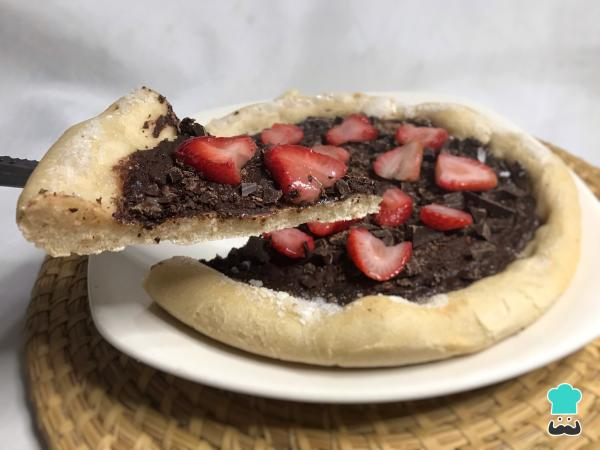

Esta receta es ideal para sorprender con un postre original en una noche de pizzas, ¡ya que la última será el postre! Descubre con nosotros cómo hacer pizza de chocolate y disfruta de un dulce diferente.
Para empezar a preparar tu pizza de chocolate, forma una corona con la harina sobre la mesa limpia. En el centro, vuelca la levadura, el aceite y el agua tibia.
Integra los ingredientes húmedos con los secos desde el centro hacia afuera. Amasa, tapa la masa obtenida y déjala reposar hasta que duplique su tamaño.
Estira la masa, dale forma redondeada y hazle el clásico borde de la pizza. Colócala sobre una bandeja para horno previamente engrasada con aceite, tápala y déjala leudar nuevamente por 20 minutos.
Pasado ese tiempo, cocina la base de pizza al horno a 200 ºC por 12 minutos aproximadamente, o hasta que la parte inferior esté algo firme y los bordes apenas dorados. F
Funde el chocolate en el microondas o al baño María
Unta el centro de la pizza con el chocolate ya derretido y caliéntala en el horno unos 5 minutos más para que se termine de cocinar. Si quieres, puedes mojar los bordes con leche y espolvorear azúcar por encima para logar un borde dulce.
Decora tu pizza de chocolate con las frutillas o fresas limpias y fileteadas. ¡Disfrútala con un rico café con leche y sorprende a todos con esta original pizza dulce de chocolate!